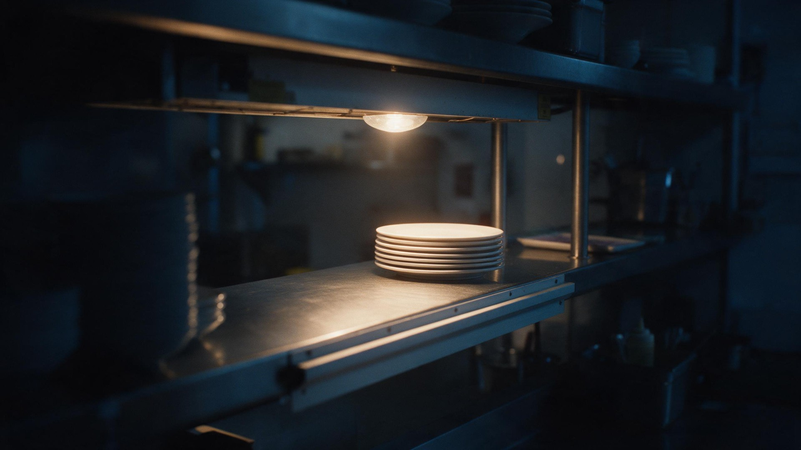

21:47
Incoming call
Answered by your
AI front desk
AI front desk
Booked: catering for 40,
Saturday 12:00
Saturday 12:00
Saffron Hearth Kitchen calendar
You closed at nine.
Your customers didn’t.
At nine forty-seven, someone called.
In your name.
Demo with an invented business
Unmissed
A premium presence.
An AI front desk.
Made with AI, checked by a person